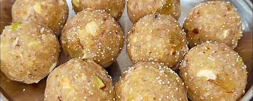
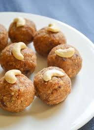

Malidalu

Ingredients:
- Urad dal (black gram lentils) - 1 cup
- Rice flour - 2 cups
- Cumin seeds - 1 teaspoon
- Salt - to taste
- Oil - for deep frying
Recipe:
- Soak urad dal in water for 4-6 hours or overnight.
- Drain the water and grind the soaked dal into a fine paste.
- In a mixing bowl, combine the ground dal, rice flour, cumin seeds, and salt.
- Knead the mixture into a smooth dough, adding water as needed.
- Divide the dough into small portions and shape them into small balls.

- Heat oil in a deep frying pan and fry the balls until golden brown and crispy.
- Remove from the oil and drain excess oil on paper towels.
- Malidalu are ready to serve. Enjoy them as a crispy snack!